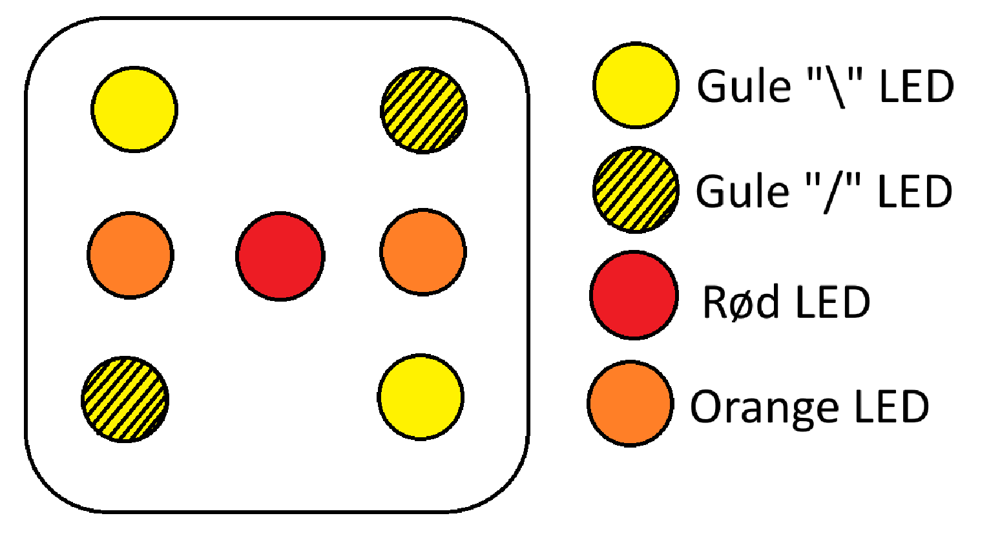
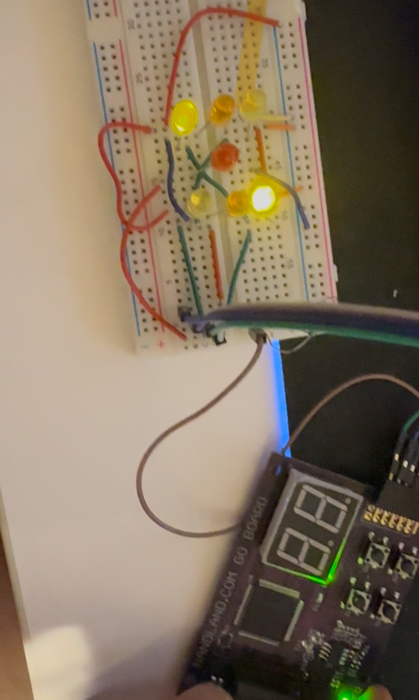

An electronic dice on an FPGA
Seven LEDs in a dice pattern, one button, one Lattice ICE40 FPGA. Hold the button and the dice cycles through 1–6 too fast to follow; let go and it stops on a face. My first hands-on FPGA project, built in IceStudio, the graphical alternative to writing Verilog.
How "randomness" works here
It is not random. There is a 3-bit counter wrapping 1 → 6 → 1, driven by a button-gated clock signal:
tick = (CLK + Button) XOR ButtonWhen the button is up, the counter input is permanently low. When the button is held, the counter input follows CLK and ticks at the FPGA's full speed, millions of times faster than a finger can release. By the time you let go the counter has effectively forgotten where it started. That gives the illusion of a real dice without any actual entropy source.

LED logic
Seven LEDs but only four logical groups (centre, two NE/SW yellows, two NW/SE
yellows, two side oranges). With the counter outputs (C, B, A) =
binary, a small truth table gives:
Red = A
Yellow / = B + C
Yellow \ = C
Orange = B · CImplemented in IceStudio as a few gates straight from the table.

The current-limiting story
The first design had a per-LED series resistor (~65 Ω for red, 60 Ω for orange, 55 Ω for yellow at 20 mA). The realised design uses a single shared 66.6 Ω resistor across all the LEDs. Slightly under-driving each LED, but they still light cleanly, and the total brightness varies less between faces because the more LEDs that turn on, the less current each one gets.
Measured currents per face: 13 mA (1) → 19 mA (6). Realised power ≈ 0.044 W (1) → 0.063 W (6), substantially below the theoretical numbers in the per-LED design.
